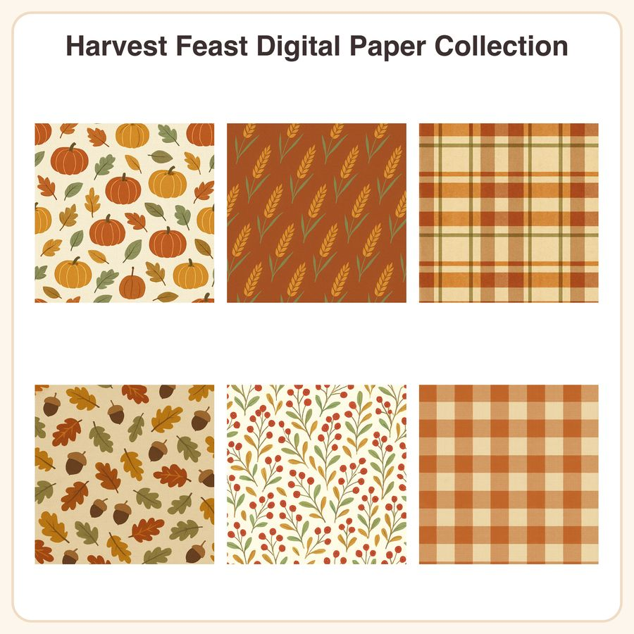

$5.99
Buy nowView on Etsy🍂 Cozy up your November projects with the Harvest Feast Digital Paper Collection — six warm, seamless autumn patterns designed for scrapbooking, printables, and small-shop packaging. What's included: • 6 seamless patterns, each as a 3072px x 3072px JPEG (12x12in @256dpi) • 6 matching repeatable PNG tiles (transparent-friendly tiling files) for custom scaling • Patterns: tossed mini pumpkins & leaves on cream linen, golden wheat diagonal repeat, rustic rust & olive plaid, scattered acorns & oak leaves on tan, cranberry sprig on cream, harvest gingham in burnt orange & cream File formats & sizes: • JPEG: 3072x3072px (12x12in), print-ready • PNG: seamless tile files for resizing/repeating in design software • Delivered as a zipped folder, instant digital download How to use: Open in Photoshop, Procreate, Canva, or any design software. Use as scrapbook backgrounds, planner covers, gift wrap, packaging, party printables, or fabric/paper mockups. PNG tiles can be scaled and repeated to fit any project size. License: Personal and small-business commercial use permitted for finished products, up to 500 sold units. Do not resell, share, or redistribute the digital files themselves as-is or as a pack. Honest note: These designs were created by our shop with the help of AI-assisted tools, then refined and finalized by hand for print-ready quality. Thank you for supporting a small shop — happy crafting! 🧡